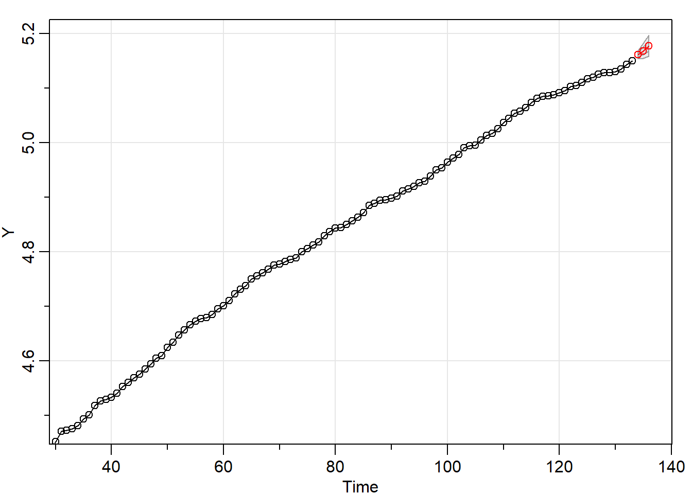
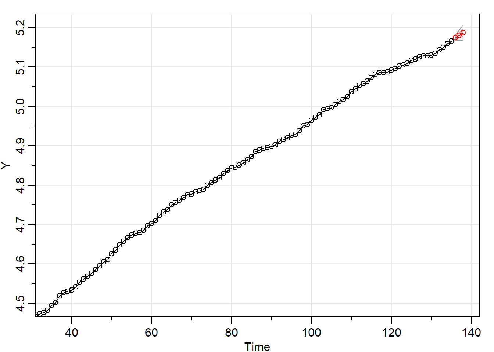
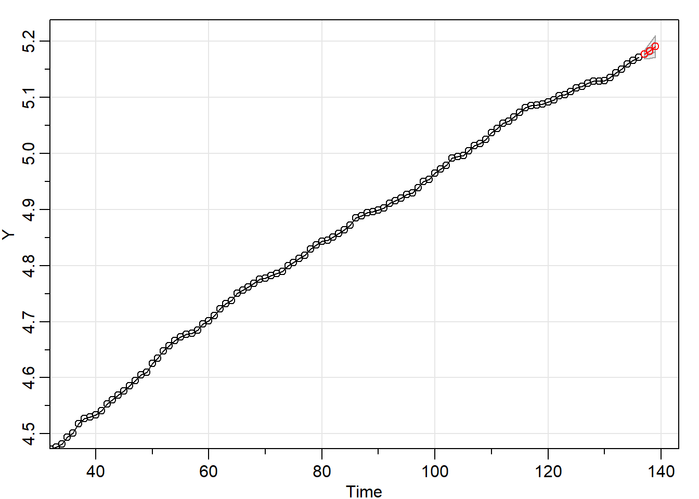
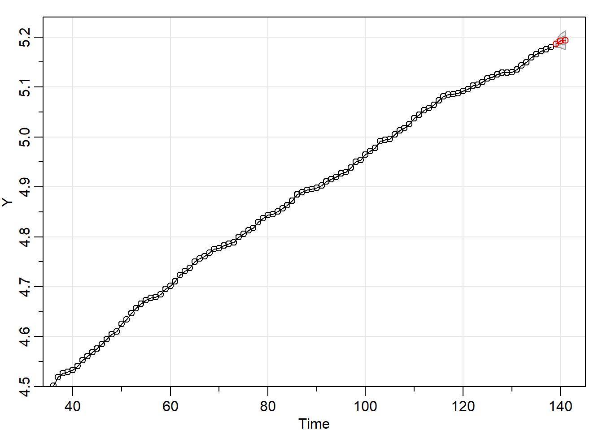
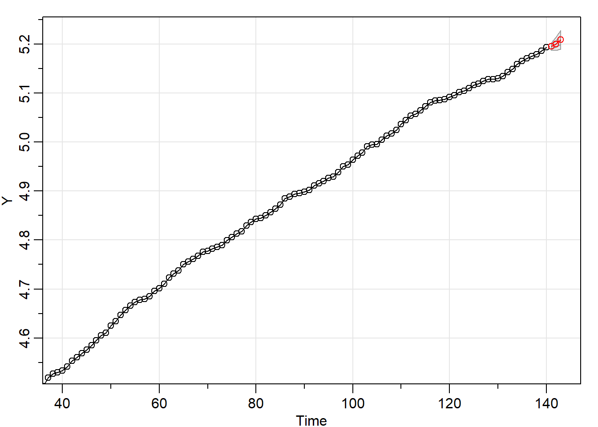
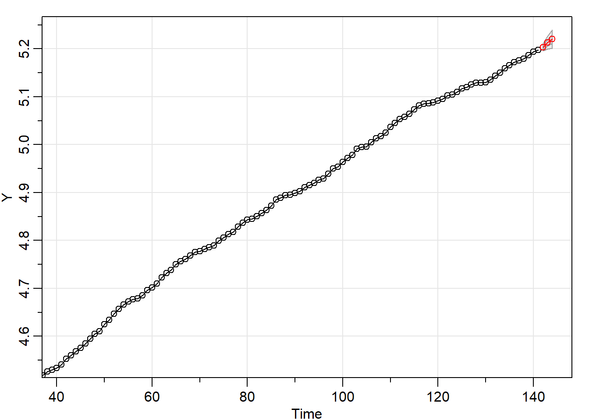

Chapter 3 Ejercicio fuera de muestra ipc de Honduras
3.1 Ipc de Honduras
IPC<-MES$IPC
FECHA <-index(MES)
t_inicial <-first(FECHA,'1 month')
index_final <- last(index(FECHA))
fecha_contador <-seq(as.Date(t_inicial), length =index_final, by = "months")
counter <-c(1:index_final)
contador <-xts(x=counter, order.by = fecha_contador)
inicio_estimacion<-coredata(contador["1996-01-01"])[1]
final_estimacion <-coredata(contador["2006-12-01"])[1]
H <-3
dates_F <- seq(as.Date(FECHA[inicio_estimacion]), length =final_estimacion-inicio_estimacion+H, by = "months")
assign(paste('IPC_', H, sep=''), xts(x=window(log(MES$IPC), start=FECHA[inicio_estimacion], end=FECHA[final_estimacion+H-1]), order.by = dates_F))
for(i in 1:10){
Y <-window(log(MES$IPC), start=FECHA[inicio_estimacion], end=FECHA[final_estimacion-1+i])
Y_F <-sarima.for(Y,H,3,0,11,0,1,0,12, xreg=NULL, newxreg=NULL)
dates_out <-seq(as.Date(FECHA[final_estimacion+i]), length =H, by = "months")
Y_F_P <-xts(x=Y_F$pred, order.by = dates_out)
assign(paste('IPC_', H, sep=''),rbind(get(paste('IPC_', H, sep='')), Y_F_P[H]) )
}
compara <-merge(log(MES$IPC),get(paste('IPC_', H, sep='')),join='right',fill=0)
compara ## IPC IPC.1
## 1996-01-01 4.015125 4.015125
## 1996-02-01 4.043140 4.043140
## 1996-03-01 4.058452 4.058452
## 1996-04-01 4.078832 4.078832
## 1996-05-01 4.099510 4.099510
## 1996-06-01 4.124369 4.124369
## 1996-07-01 4.146943 4.146943
## 1996-08-01 4.174600 4.174600
## 1996-09-01 4.191478 4.191478
## 1996-10-01 4.206069 4.206069
## 1996-11-01 4.225648 4.225648
## 1996-12-01 4.236681 4.236681
## 1997-01-01 4.256881 4.256881
## 1997-02-01 4.280811 4.280811
## 1997-03-01 4.288338 4.288338
## 1997-04-01 4.294164 4.294164
## 1997-05-01 4.306671 4.306671
## 1997-06-01 4.319496 4.319496
## 1997-07-01 4.333369 4.333369
## 1997-08-01 4.345675 4.345675
## 1997-09-01 4.348796 4.348796
## 1997-10-01 4.346134 4.346134
## 1997-11-01 4.353825 4.353825
## 1997-12-01 4.356012 4.356012
## 1998-01-01 4.364260 4.364260
## 1998-02-01 4.388778 4.388778
## 1998-03-01 4.405547 4.405547
## 1998-04-01 4.422721 4.422721
## 1998-05-01 4.434569 4.434569
## 1998-06-01 4.452000 4.452000
## 1998-07-01 4.471568 4.471568
## 1998-08-01 4.473026 4.473026
## 1998-09-01 4.476017 4.476017
## 1998-10-01 4.481571 4.481571
## 1998-11-01 4.494095 4.494095
## 1998-12-01 4.501361 4.501361
## 1999-01-01 4.518372 4.518372
## 1999-02-01 4.526923 4.526923
## 1999-03-01 4.529910 4.529910
## 1999-04-01 4.533346 4.533346
## 1999-05-01 4.541166 4.541166
## 1999-06-01 4.553044 4.553044
## 1999-07-01 4.560712 4.560712
## 1999-08-01 4.568910 4.568910
## 1999-09-01 4.576166 4.576166
## 1999-10-01 4.585253 4.585253
## 1999-11-01 4.594759 4.594759
## 1999-12-01 4.605170 4.605170
## 2000-01-01 4.610123 4.610123
## 2000-02-01 4.625116 4.625116
## 2000-03-01 4.634529 4.634529
## 2000-04-01 4.647271 4.647271
## 2000-05-01 4.656813 4.656813
## 2000-06-01 4.666265 4.666265
## 2000-07-01 4.672829 4.672829
## 2000-08-01 4.677491 4.677491
## 2000-09-01 4.679350 4.679350
## 2000-10-01 4.684905 4.684905
## 2000-11-01 4.695925 4.695925
## 2000-12-01 4.701389 4.701389
## 2001-01-01 4.710431 4.710431
## 2001-02-01 4.722953 4.722953
## 2001-03-01 4.731803 4.731803
## 2001-04-01 4.737951 4.737951
## 2001-05-01 4.750136 4.750136
## 2001-06-01 4.756173 4.756173
## 2001-07-01 4.761319 4.761319
## 2001-08-01 4.768139 4.768139
## 2001-09-01 4.775756 4.775756
## 2001-10-01 4.777441 4.777441
## 2001-11-01 4.782479 4.782479
## 2001-12-01 4.785824 4.785824
## 2002-01-01 4.789157 4.789157
## 2002-02-01 4.799914 4.799914
## 2002-03-01 4.805659 4.805659
## 2002-04-01 4.812997 4.812997
## 2002-05-01 4.817859 4.817859
## 2002-06-01 4.829113 4.829113
## 2002-07-01 4.837075 4.837075
## 2002-08-01 4.843399 4.843399
## 2002-09-01 4.844974 4.844974
## 2002-10-01 4.850467 4.850467
## 2002-11-01 4.856707 4.856707
## 2002-12-01 4.863681 4.863681
## 2003-01-01 4.872139 4.872139
## 2003-02-01 4.885072 4.885072
## 2003-03-01 4.888844 4.888844
## 2003-04-01 4.894101 4.894101
## 2003-05-01 4.895598 4.895598
## 2003-06-01 4.898586 4.898586
## 2003-07-01 4.902307 4.902307
## 2003-08-01 4.911183 4.911183
## 2003-09-01 4.915592 4.915592
## 2003-10-01 4.919981 4.919981
## 2003-11-01 4.926529 4.926529
## 2003-12-01 4.929425 4.929425
## 2004-01-01 4.938781 4.938781
## 2004-02-01 4.950177 4.950177
## 2004-03-01 4.953712 4.953712
## 2004-04-01 4.964242 4.964242
## 2004-05-01 4.971894 4.971894
## 2004-06-01 4.978112 4.978112
## 2004-07-01 4.991113 4.991113
## 2004-08-01 4.994506 4.994506
## 2004-09-01 4.995860 4.995860
## 2004-10-01 5.004617 5.004617
## 2004-11-01 5.013298 5.013298
## 2004-12-01 5.017280 5.017280
## 2005-01-01 5.025195 5.025195
## 2005-02-01 5.036953 5.036953
## 2005-03-01 5.044715 5.044715
## 2005-04-01 5.053695 5.053695
## 2005-05-01 5.057519 5.057519
## 2005-06-01 5.064492 5.064492
## 2005-07-01 5.073297 5.073297
## 2005-08-01 5.081404 5.081404
## 2005-09-01 5.085124 5.085124
## 2005-10-01 5.085743 5.085743
## 2005-11-01 5.087596 5.087596
## 2005-12-01 5.091908 5.091908
## 2006-01-01 5.095589 5.095589
## 2006-02-01 5.102565 5.102565
## 2006-03-01 5.104733 5.104733
## 2006-04-01 5.110179 5.110179
## 2006-05-01 5.116795 5.116795
## 2006-06-01 5.119789 5.119789
## 2006-07-01 5.125154 5.125154
## 2006-08-01 5.128715 5.128715
## 2006-09-01 5.128715 5.128715
## 2006-10-01 5.129899 5.129899
## 2006-11-01 5.135210 5.135210
## 2006-12-01 5.143416 5.143416
## 2007-01-01 5.149817 5.149817
## 2007-02-01 5.158945 5.158945
## 2007-03-01 5.165928 5.169134
## 2007-04-01 5.171620 5.177588
## 2007-05-01 5.175585 5.178838
## 2007-06-01 5.179534 5.187207
## 2007-07-01 5.186268 5.190610
## 2007-08-01 5.193512 5.195522
## 2007-09-01 5.197391 5.193731
## 2007-10-01 5.209486 5.198121
## 2007-11-01 5.226821 5.209163
## 2007-12-01 5.228431 5.220281